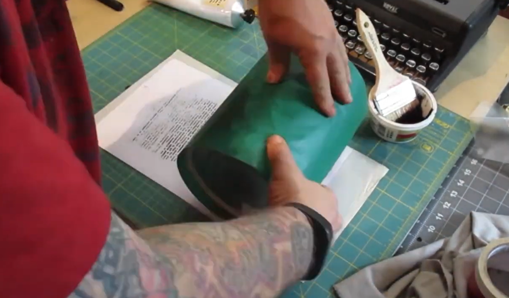

How to Print at Home
Watch a Tutorial
VIDEO: Mimeo-Can! The Tin-Can Wonder!
by Special Collections & Archives, UIowa Libraries
Join Olson Graduate Rich Dana and Curator of Science Fiction and Popular Culture Collections Peter Balestrieri as they explore the techniques created by Dale and Anita Tarr back in the 1940s of printing zines with a paint can.
Learn how to print your own zine at home using the Mimeo Can Method!